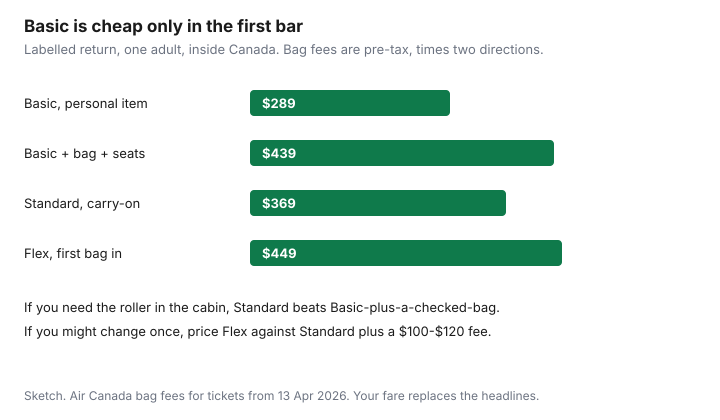

Travel · Canada
Air Canada Basic vs Standard (and Flex): When Paying Up Beats the Cheap Fare
Basic is a real product. It is cheap when you travel the way it is written: one bag under the seat, dates that will not move, a seat you did not choose. It is expensive when a household buys it because it was the first column, then adds a carry-on, a seat, and a change the fare does not allow. Standard and Flex are the buy when those extras are already in the trip. The comparison is arithmetic you do before you pay, not a brand preference.
Rules below were read from Air Canada’s carry-on, baggage-fee, products, and customer-service pages on 23 Sep 2026. Your receipt can differ by the day the ticket was issued. WestJet’s UltraBasic is a cousin product. The bag mechanics for both airlines are in the bag-fee guide. This page is the Air Canada fare-brand decision.
Disclosure: This decision has no natural retail offer. Saving Optimizer does not claim an Air Canada or card partnership. Card benefits are described so you can use one you already hold. No card is ranked. Education only.
Key takeaways
- Basic, tickets from 3 January 2025, is a personal item on many North American and sun routes. Standard includes the standard carry-on. Both can charge for the first checked bag on those routes.
- Air Canada’s products page: Basic, no changes permitted. Standard, a change fee in the $100–$120 band within Canada. Flex, no change fee. A higher fare can still cost the difference.
- First checked bag on Basic and Standard, tickets from 13 April 2026, within Canada or to the U.S., Mexico, the Caribbean, or Central America: CA/US $45 before tax. Flex includes that first bag. Long-haul Basic from 14 May 2026 is $90 for the first bag; Standard and Flex include it.
- Aeroplan 25K and an eligible Aeroplan card can remove checked-bag fees. They do not turn Basic into a changeable fare, and the card’s bag benefit does not apply at the gate.
- Buy Basic when the personal item is honest and the dates are fixed. Otherwise price the upgrade before you click.
- Air Canada’s customer service plan: cancel within 24 hours of purchase for a full refund on tickets it sold, including non-refundable fares. Agency tickets go back through the agency.
Map what Basic excludes: bags, changes, seat selection, and same-day options
Read the four exclusions as a set. Households get hurt by the one they did not look at.
Bags. Economy Basic purchased on or after 3 January 2025 includes one personal item, maximum 33 × 43 × 16 cm including wheels and handles, when you travel within Canada, to or from the United States (including Hawaii and Puerto Rico), or to or from Mexico, Central America, and the Caribbean. The standard carry-on, 23 × 40 × 55 cm, is not included. A bag that does not qualify is checked before security. If you reach the gate, Air Canada describes a pre-authorization around CA/US $65–$78 tax inclusive, and checked-bag fees can still apply. An international itinerary that includes a standard carry-on keeps it for the whole ticket, including a Canadian connection. Standard includes the carry-on. On the routes and ticket dates above, Basic and Standard both charge for the first checked bag. Flex includes the first checked bag.
Changes. The products-and-services page lists Economy Basic as “no changes permitted.” Economy Standard shows a change fee of $100–$120 (the page presents a tax-style range; confirm the amount on the fare rules before purchase). Economy Flex is listed with no change fee. In each case a move to a higher fare can still require you to pay the difference. “No change fee” is not “fly any other day for free.”
Seat selection. Basic does not hand you a chosen seat. You can pay for one, at a price that depends on the flight and the row, or you can accept what is left at check-in. Standard often works the same way unless a bundle added seats. Children under 14 are a statutory exception: the airline must seat them near a parent at no extra charge under the Air Passenger Protection Regulations. That right is not a free preferred seat for the adults.
Same-day options. A same-day change, standby, or confirmed move is a change. Basic does not permit changes, so there is no same-day lever on that fare. Standard’s change fee can make a same-day move cost as much as the fee plus a fare difference, which is sometimes more than buying Flex in the first place. Flex is the brand built for a day that might move. If you need to be in a city for a fixed event and the only flight is once a day, none of the brands creates a second flight. Buy the schedule that still works if you are an hour late. That schedule question is in the booking-window guide.
| Item | Basic | Standard | Flex |
|---|---|---|---|
| Carry-on on the routes above | No, from 3 Jan 2025 | Yes | Yes |
| First checked bag, tickets from 13 Apr 2026 | $45 before tax | $45 before tax | Included |
| Changes | Not permitted | Fee about $100–$120, plus any fare difference | No change fee; fare difference can apply |
| Same-day move | Not a feature | Only if you pay the change rules | The brand that can absorb a move |
Price the upgrade: first bag + seat + change probability vs buying Standard upfront
Do not compare headlines. Compare the trip you will take. A one-adult return sketch, labelled, not a live fare:
| What you buy | Headline return | Add | Sketch |
|---|---|---|---|
| Basic, personal item, no seat, no change | $289 | Nothing | $289 |
| Basic, but you need the roller checked | $289 | $45 × 2, plus $30 seat × 2 | $439, and the roller is not in the cabin |
| Standard, carry-on, no checked bag, no seat | $369 | Nothing if you skip the seat | $369 |
| Standard, plus you change once | $369 | Change fee about $100–$120, plus any fare difference | $469–$489 before a fare difference |
| Flex, first bag included | $449 | No change fee. Fare difference only if the new fare is higher. | $449, then the difference if you move up |

Read the sketch in order. If you need a carry-on and nothing else, Standard at $369 beats Basic-plus-a-checked-bag at $439, and you still have the bag in the cabin. If you might change the ticket once, Flex at $449 can beat Standard plus a $100 change fee, before any fare difference. If the change is unlikely and you will not check a bag, Standard wins. If you will truly fly with the personal item on a fixed date, Basic wins and the other rows are theatre.
Two adults who each need a roller double the bag line. A $80 headline gap between Basic and Standard disappears when each person adds $90 of checked bags. Multiply before you tell the group you “saved” the gap.
Long-haul is a different table. Tickets from 14 May 2026 to Africa, Asia and the South Pacific, Europe, the Middle East, or South America: Basic’s first bag is $90 and the second is $120. Standard and Flex include the first bag. Paying up to Standard on those routes is often a bag decision, not a carry-on decision, because a Basic international itinerary that includes a standard carry-on may already allow the roller in the cabin. Read the receipt either way.
Aeroplan status and credit-card bag benefits that change the Basic math
Status and a card change the checked-bag column. They do not rewrite the rest of Basic.
Air Canada’s September 2025 elite update, effective February 2026: Aeroplan 25K may check one bag on top of what the fare includes, up to two complimentary checked bags, on Air Canada economy. The update says that benefit can combine with the first-bag benefit on an eligible Aeroplan Premium or Core card, so a 25K member on a fare with zero included bags can check up to two. If you hold 25K and you were going to pay $45 each way for one bag, Basic’s checked-bag line can fall to zero. Basic still excludes the carry-on on the North American routes, still forbids changes, and still does not include a seat.
Eligible Aeroplan cards, on Air Canada’s own benefit pages, include a first checked bag up to 23 kg for the primary cardholder and up to eight companions on the same reservation, when the trip starts on Air Canada, Rouge, or Express and the bag is checked before security. Gate-checked bags are excluded. If the fare already includes the first bag, the card does not add another one, aside from the 25K combination the elite update describes. The card has to be linked the way the terms require. A card in a drawer that did not pay for the ticket, when the terms require that, is not a waiver.
Use the benefit if you have it. Do not open a card because this paragraph named the mechanism. No annual fee is justified here. If the benefit applies, redo the table: Basic plus a free checked bag can beat Standard when you do not need the carry-on in the cabin and you will not change. If you need the carry-on, the card does not provide it on Basic. You are back to Standard.
When Basic is fine: short carry-on-only trips with fixed dates
Basic is the correct fare when all of these are true.
- The trip is short enough that one personal item, packed to 33 × 43 × 16 cm, is the whole wardrobe. A laptop and a charger still have to fit.
- The dates are fixed: a wedding, a school break you cannot move, a meeting that will not slide. You will not want a same-day earlier flight.
- You can sit apart, or the only child under 14 will be seated with you under the regulatory rule, and nobody is paying $40 to avoid a middle seat they will resent.
- The ticket is on one booking, so a missed connection is the airline’s problem. A separate ticket on Basic is a bad place to be stranded.
- You checked status and any card you already hold, and you are not about to pay for a bag those benefits would have removed.
Basic is the wrong fare when any line fails. A weekend that “might” become a Monday is a Flex conversation. A family that will not split up is a seat conversation. A week away is a carry-on conversation. Pay the brand that matches the trip. The hours you spend regretting Basic at the gate are not free.
Document the 24-hour refund rule and tariff gotchas before you click buy
Air Canada’s customer service plan, read 23 Sep 2026, says you may cancel up to 24 hours after purchase and receive a full refund without penalty. The policy covers refundable and non-refundable fares. Air Canada processes it when Air Canada sold the ticket. If a travel agency or another airline issued the ticket, you cancel through them. Do not assume an online agency’s Basic fare inherited the clock. The habit is to book, then look again the next morning before the day is up. A drop that beats the bother is a cancel-and-rebuy. A typo in the date is cheapest to fix inside this window.
After 24 hours, the tariff is the tariff. Gotchas that show up on household bookings:
- Basic cannot be changed. A new date is a new ticket, and the old one is yours to keep.
- Standard’s change fee is not the whole cost. The fare difference is the rest, and it can be larger than the fee.
- Flex with no change fee can still collect a difference if the new flight is more expensive. “Free changes” in a headline is the fee line, not the fare line.
- A mixed itinerary can follow the most restrictive bag rule on a segment. Read the allowance on the receipt, not the allowance you remember from a different route.
- Codeshare segments can apply the operating carrier’s bag rules. If the first flight is not Air Canada, confirm whose sizer you will meet.
- The 24-hour refund is not the same thing as a refund when the airline cancels the flight. That right is the APPR refund guide.
Build a simple fare-class checklist for household bookings so nobody surprises the group
One person usually clicks buy. Everyone else lives with the brand. Send this list before payment, and keep the answer with the confirmation.
- Who is travelling, and does anyone need a seat beside a child under 14? If yes, note the no-charge seating rule so you do not buy four seats out of fear. If the adults also want a specific row, that is a paid choice. Say so.
- What is each person carrying: personal item only, carry-on, or a checked bag? Match the brand. Do not buy Basic for the group because one person travels light.
- Will anyone change the date? If “maybe,” price Flex against Standard plus one change fee. If “no,” write no.
- Whose Aeroplan number and whose card benefit, if any, are on the booking? Confirm the bag line went to zero on the payment page, not in a group chat.
- Is the ticket issued by Air Canada or by an agency? Circle the 24-hour path that applies.
- One ticket or separate tickets? Separate tickets mean a missed connection is your problem. Basic makes that problem non-changeable.
If the group cannot answer 2 and 3, you are not ready to buy the cheapest column. Buy the column the answers describe. Then use the 24 hours.
Sources & date stamps
- Air Canada, carry-on baggage — Basic personal-item rule from 3 Jan 2025, dimensions, gate pre-authorization about CA/US $65–$78. Used 23 Sep 2026.
- Air Canada, baggage fee changes (13 Apr 2026 and 14 May 2026) — $45 / $60 and long-haul $90 / $120 figures cited above. Used 23 Sep 2026.
- Air Canada, products and services — Basic no changes; Standard change-fee band; Flex no change fee; fare difference on a higher fare. Used 23 Sep 2026.
- Air Canada customer service plan — 24-hour cancel for a full refund on tickets Air Canada sold. Used 23 Sep 2026.
- Air Canada, September 2025 elite update (effective February 2026) and Aeroplan card benefit pages — 25K extra bag and the before-security card rule. Used 23 Sep 2026. Not a card recommendation.
- Air Passenger Protection Regulations, section 22 — child under 14 seated near a parent at no additional charge.
Frequently asked questions
What does Air Canada Basic leave out?
On tickets bought on or after 3 January 2025, Basic is one personal item, not a standard carry-on, for trips within Canada, to or from the United States, and to or from Mexico, Central America, and the Caribbean. Changes are not permitted. Seat selection is a paid add-on if you want it. A same-day change is not a feature of a fare that cannot be changed. Checked-bag fees still apply.
Is Standard worth the extra money?
When you will carry a roller, or you might change the ticket. On North American tickets from 13 April 2026, Basic and Standard both charge about $45 before tax for the first checked bag. The usual gap is the carry-on, the seat, and Standard’s change fee of about $100–$120 versus Basic’s no-change rule. Flex includes the first checked bag and lists no change fee. Fare difference can still apply.
Do Aeroplan status or a credit card make Basic cheaper?
They can. From February 2026, Aeroplan 25K includes one checked bag on top of the fare, up to two, and Air Canada says that can combine with an eligible Aeroplan card’s first-bag benefit. Card terms require the bag to be checked before security, not at the gate, on an Air Canada-operated flight. The card does not give you a carry-on on Basic, and it does not make a Basic fare changeable. This is not a card ranking.
When is Basic the right buy?
A short trip, one personal item that meets 33 by 43 by 16 cm, dates that will not move, and no need to sit in a particular seat. If any of those is false, price Standard or Flex before you pay.
Can I cancel if the fare drops tomorrow?
Air Canada’s customer service plan allows a full refund without penalty up to 24 hours after you buy a ticket from Air Canada, including a non-refundable fare. If an agency issued the ticket, you cancel through the agency. After that window, Basic is a fare you keep.